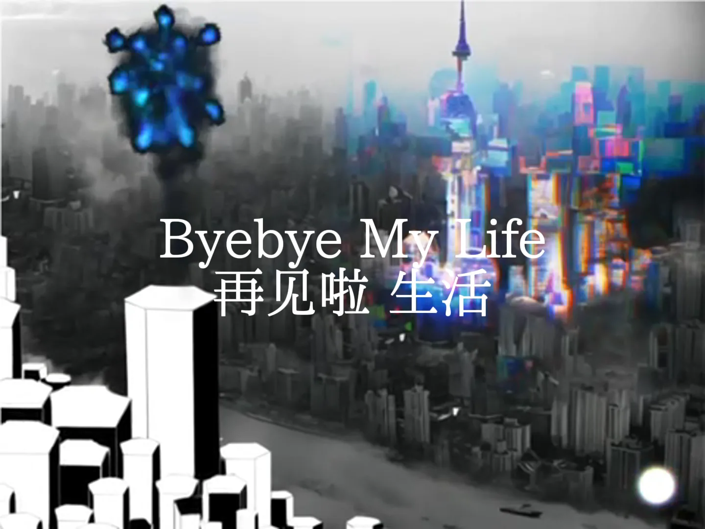

动画短片，2024 年
Dear Monica
一封写给我妈妈的信，由一只住在上海的老鼠写在画面上。每一句都说一切都好；信里没写的，由画面说出来。一分三十八秒，大部分逐帧手绘。
- 年份
- 2024 年，4 月完成
- 角色
- 导演、动画、编剧。画、拍、剪都由我完成。
- 机构
- 同济大学设计创意学院
- 状态
- 已在 YouTube 上线

01这封信
二十一句话，每一句都说一切都好
影片没有旁白，只有这封信本身：老鼠一边写，字一边出现在画面上。点击任意一句，影片就跳到那里。
然后是五行标题字，叠在书桌和天际线上 · · · ·
02老鼠
我选择老鼠，不只因为它脆弱，也因为它坚韧，有一种安静的聪明。
在片中，我把自己化作一只老鼠：一个不被注意、小心翼翼的小生物，在上海这座巨大而冷漠的城市里求生。借着老鼠，脆弱和无力变得看得见；这部片子是我对代际隔阂的个人表达，也是对当下城市生存压力的反思。


03城市
三种塔楼
为了搭建场景，我参考了北京 Pixel 住宅区密集的居民楼、上海陆家嘴写字楼林立的天际线，以及中世纪塔楼孤零零的垂直感。它们合在一起，代表挤压、监视和情感上的距离，这正是主角内心世界的感受。
- 北京 Pixel 住宅区模块化的密集与匿名：层层堆叠、不断重复的窗户，被困住的日常，去个人化的生活。
- 上海陆家嘴野心、压力和城市资本的体量：天际线压倒一切，个人只觉得自己越来越小。
- 中世纪塔楼孤立，壁垒森严：情感上的防御与内心的距离；垂直感成了隐喻，喻指内化的力量与隔绝。


画场景时钉在手边的画：一座穹顶、一座塔、一座雾中的城市、一个房间、一座中殿。另有两件参考作品，爱德华·霍珀的《海边的房间》和胡安·米罗的《丑角狂欢节》，仍在版权期内，所以只列名字，不展示。


04逐帧
影片是用什么做成的
逐帧动起来的墨水手绘、叠画过的城市照片、一个让手绘老鼠在上面行走的 3D 舞台，还有接近结尾时，做这部片子的那张书桌。下面是十二帧，按先后顺序排列。




这份记录说明不了的
- 这封信就是全部剧本。除了它在 YouTube 上公开，影片在哪里放映过、反响如何，都没有记录。
- 手绘的帧只存在于影片里。分镜只留下五张小图，一共画了多少帧也没有统计。
- 音乐是两首现成的歌曲，片中已署名；本页不主张对它们的任何权利。部分背景用了别人的影像素材，片中也署名了朋友提供的照片和声音。
- 英文字幕是为本页做的翻译；影片原本的字句是中文。
- 参考作品中有两件，霍珀的《海边的房间》和米罗的《丑角狂欢节》，因为仍在版权期内，只列出名字，不复制展示。
AI 使用
接近结尾处有几秒城市动起来的画面，是用 Runway Gen-2 从我自己合成的天际线图生成的；城市上空的烟花是手绘的。本页的英文字幕是借助 AI 翻译的。
详情
- 题目
- Dear Monica。一部动画短片，1 分 38 秒：一只住在上海的老鼠写给我妈妈的一封信。
- 媒介
- 动画短片，1 分 38 秒，4:3 · 逐帧动画的墨水手绘 · 上海的照片与一个 3D 六边形舞台 · 字句为中文，本页配有英文字幕
- 技能
- 分镜 · 逐帧动画 · 合成 · 剪辑
- 工具
- Photoshop 和相机，据工作文件所见
音乐（按片中的署名）：King Gizzard & the Lizard Wizard 的《Shanghai》，Bark Psychosis 的《Pendulum Man》。片中还署名了朋友提供的照片和声音。静帧都取自影片；三张老鼠的画是工作文件；五张分镜只留存在 2025 年的作品集 PDF 里。接近结尾处有几秒城市动起来的画面，是用 Runway Gen-2 从我自己合成的天际线图生成的；城市上空的烟花是手绘的。这里展示的五幅参考画作，是公有领域作品的复制品。英文字幕是为本页添加的，译自影片原本的字句。